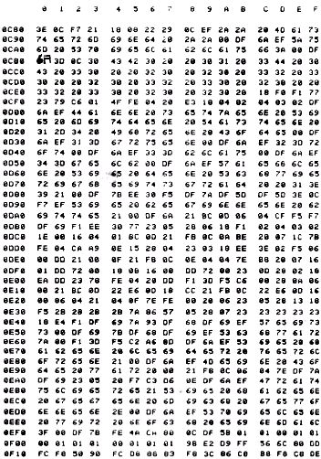

Nascom Journal |
2/81 |
| Angaben zum Spiel: | |
| Start: | bei 0C80H |
| Art des Progr.: | interaktiv |
| benötigter Speicherplatz : | 1 K Version des Nascom 1 (NAS-SYS) reicht aus. (ca. 0380H By.) |
Das Spiel wird durch den Befehl EC80 gestartet. Nun erscheint auf dem Bildschirm die Aufforderung, 4 mal die Taste „4“ zu drücken. Damit wird ein schnell laufender Generator gestoppt, der ständig von 1 – 4 zählt. Stoppt man ihn, so wird die gerade im A-Register stehende Zahl (entspricht einer Farbe, dargestellt durch die Zahlen 1-4) in einem Zwischenspeicher abgelegt.
Dieser Vorgang wiederholt sich viermal und dient dazu, den zu erratenden Code zu erstellen. Das Programm erzeugt einen einigermaßen zufälligen Farbcode, der sich nur selten wiederholt.
Nun wird eine für das Spiel notwendige Erklärung auf den Bildschirm ausgegeben, und der Spieler wird aufgefordert, seinen Schwierigkeitsgrad zu wählen. Dieser Schwierigkeitsgrad liegt zwischen 1 und 9, wobei die Zahl angibt, in wievielen Versuchen man den Code „knacken“ möchte. Schafft man es innerhalb dieser selbstgesteckten Grenze nicht, den Code des Computers zu finden, so kommentiert er das mit der Bemerkung, daß er das Spiel gewonnen hat, gibt aber zugleich auch seinen Code aus, damit ein Vergleich angestellt werden kann. Nach der Eingabe des Schwierigkeitsgrades wartet der Computer noch etwa 2 Sekunden, löscht dann den Bildschirm und fordert den Spieler auf, seine Eingaben zu machen. Nach der vierten Zahl gibt dann der Computer an, wieviel Farben (Zahlen) richtig gewählt, aber nicht am richtigen Platz sind (z.B.: 01 weiss), danach die Anzahl der richtigen Zahlen, die auch am richtigen Platz stehen (z.B.: 02 schwarz).
|
Jürgen Weiermann |
Bei der Berechnung dieser Information ergibt sich gelegentlich ein kleiner
Schönheitsfehler, der aber keineswegs als tragisch zu betrachten ist:
| vom Computer gesetzter Code: | 3444 |
| vom Spieler gesetzter Code: | 4144 |
Demnach müßte der Computer folgende Angaben machen: 01 weiss ; 02 schwarz
Es kommt aber zu folgenden Angaben:
FF weiss ; 02 schwarz
Der Grund hierfür: es werden zuerst die schwarzen berechnet, also 02, dann die weissen. Hier berechnet er aber alle Stellen, d.h. auch die Stellen, für die schon 02 schwarze gegeben wurden. Danach werden dann von 01 weissen 02 schwarze abgezogen, und dies ergibt dann das ominöse FF.
In allen anderen Fällen funktioniert diese Berechnung ohne Fehler.
Am Ende des Spiels wird dann die Frage gestellt, ob man noch weiterspielen möchte. Bei Eingabe eines „J“ für ja beginnt das Programm von vorn, bei „N“ übergibt das Programm die Kontrolle wieder an das Betriebsprogramm NAS-SYS.
| Seite 14 von 20 |
|---|